2013 International Symposium on Code Generation and Optimization
2013 International Symposium on Code Generation and Optimization


Table of Contents
View CGO 2013 Fun in a larger map
1 Shenzhen Fun
Shenzhen (深圳, Travel Wiki) is a major city in the south of Southern China’s Guangdong Province,
situated immediately north of Hong Kong.
The area became China’s first—and one of the most successful—Special Economic Zones (SEZs).
It currently also holds sub-provincial administrative status, with powers slightly less than a province.
| 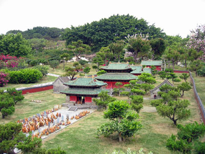 |
The park’s theme reflects the history, culture, art, ancient architecture, customs and habits of various nationalities. It is one of the world’s largest scenery parks in the amount of scenarios reproduced. |
| 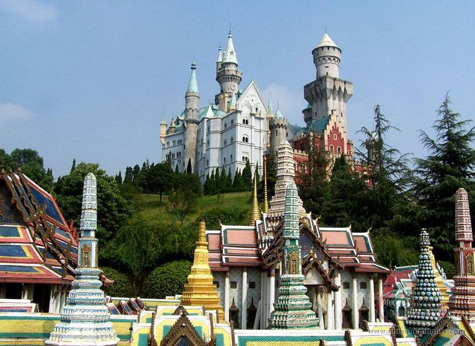 |
The park has about 130 reproductions of some of the most famous tourist attractions in the world squeezed into 48 hectares (118 acres). |
| 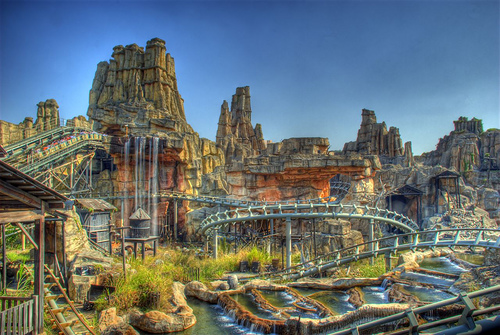 |
A large modern theme park in China, is located in Nanshan District, Shenzhen. Covering an area of 350,000 square meters (about 86 acres), the park boasts large quantities of breathtaking and exciting amusements to satisfy anyone’s desire for modern entertainments. |
| 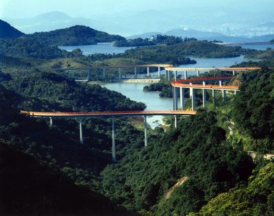 |
Occupying about 9 square kilometers, OCT East, the national ecological resort featuring tourism culture, aims at providing visitors with an opportunity to escape from the bustle of city life and return to the nature, Elaborately designed along the mountain and the sea, OCT East resort has three major theme parks: Knight Valley, Tea Stream Valley and Wind Valley. |
|
One of the 8 most beautiful beaches in China. Xichong attracts the tourists mainly by its long beach. It is on the east coastline of Shenzhen. |
|
|
Dafen is home to hundreds of art galleries and oil painting companies. Come here to observe how thousands of artists in this “art factory” mass produce original and imitation paintings for sale around the world. |
|
| 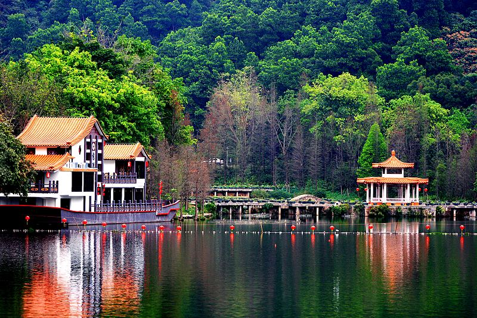 |
one of the most famous Botanical Garden in China, located at No.160 Liantang Fairy Lake Road of Shenzhen city, and covers an area of about 590 hectares. The Botanical Garden mixed of tourism, science research and science popularization. |
| 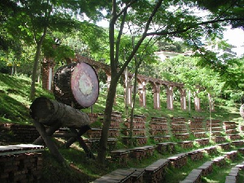 |
Home to a myriad of species, the tropical rainforest is paradise to biologists, geographers, and explorers. |
2 Chinese Culture Fun
2.1 Lantern Festival
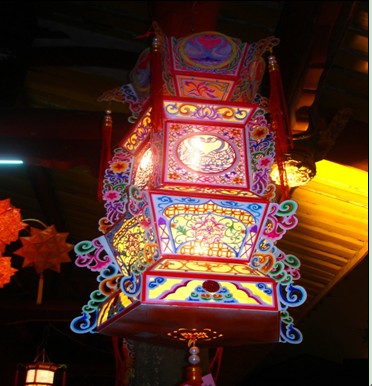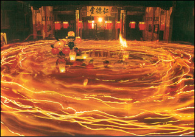
It is a festival celebrated on the fifteenth day of the first month in the lunar new year in the Chinese calendar, the last day of the lunar Chinese New Year celebration.
2.2 Shenzhen Dinning
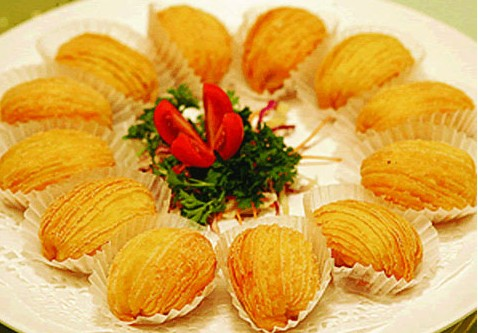
Because Shenzhen is a migrant city, all of China’s regional cuisines are represented here.As a city in Guangdong province, Cantonese cuisine, also known as Yue Cai, dominates the restaurant scene.
3 China Fun
3.1 Hong Kong
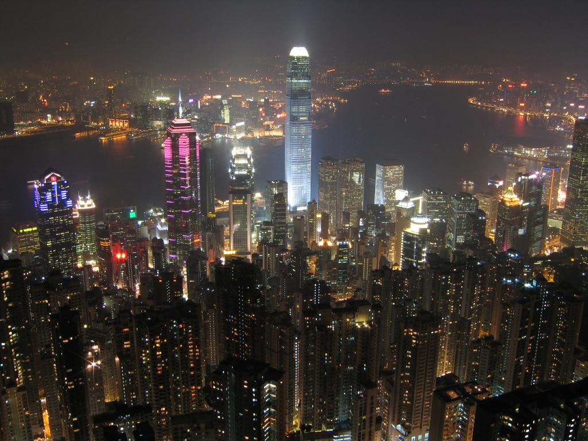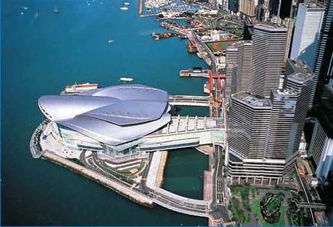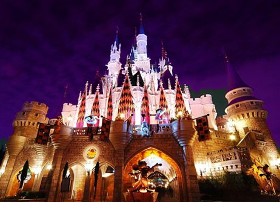
Hong Kong situates immediately south of Shenzhen . As one of the world’s leading international financial centers, Hong Kong has a major capitalist service economy characterized by low taxation and free trade.
3.2 Guangzhou
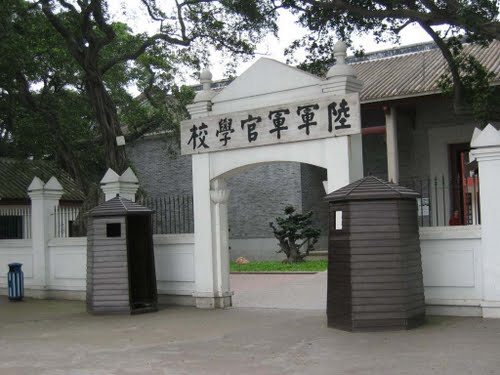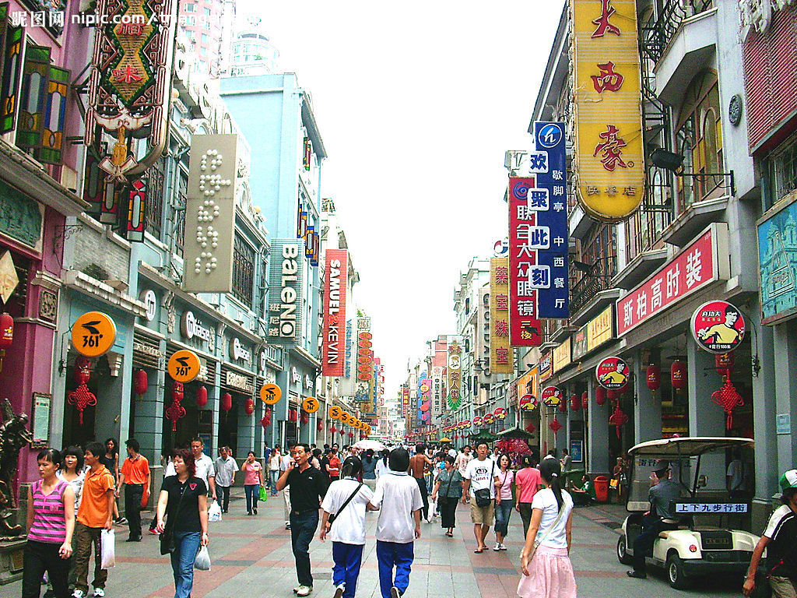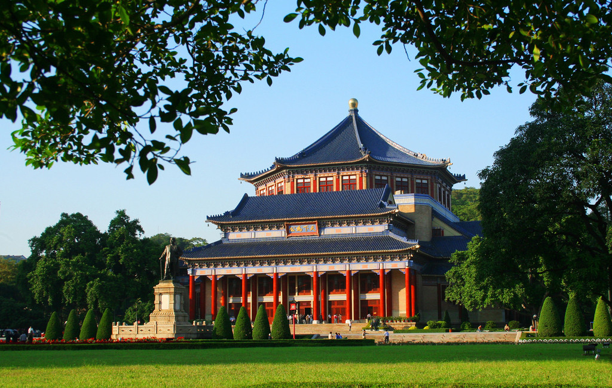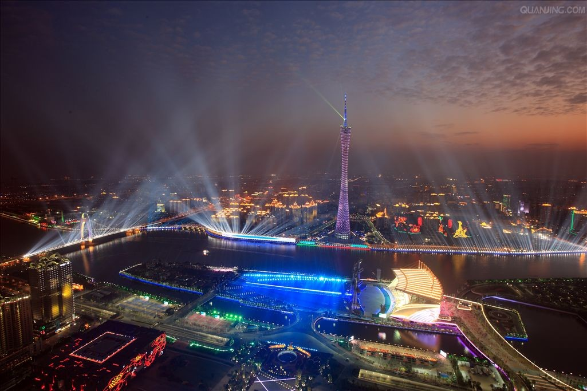
Guangzhou (广州 Guǎngzhōu, old style Kwangchow or just simply GZ) is the capital of Guangdong Province in southern China.The city is famous for foreign trade and business doings, and holds China’s largest trade fair, the Canton Fair. It only take $14( RMB ¥80) and about 80min to travel between Shenzhen and Guangzhou by Guangshen intercity train service.
3.3 Beijing

Beijing (北京 Běijīng) is the capital of the most populous country in the world, the People’s Republic of China, and also its second largest city after Shanghai. It was also the seat of the Ming and Qing dynasty emperors until the formation of a republic in 1911. Beijing is the political, educational and cultural center of the country and as such it is rich in historical sites and important government and cultural institutions. It takes about 4 hours to travel between Beijing and Shenzhen by plane.
3.4 Xi’an
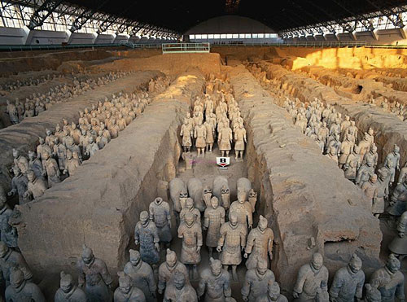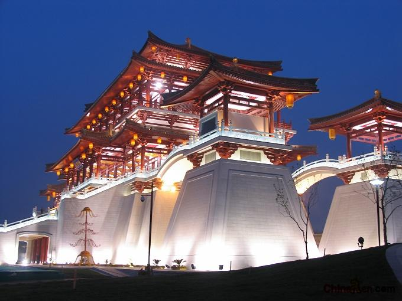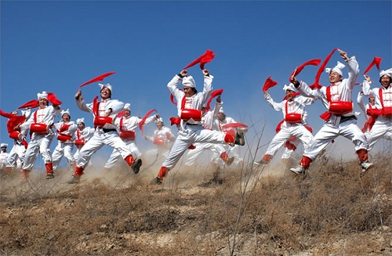
Xian, the eternal city, records the great changes of the Chinese nation just like a living history book. Called Chang’an in ancient times, Xian is one of the birthplaces of the ancient civilization in the Yellow River Basin area of the country. During Xian’s 3,100 year development, 13 dynasties such as Western Zhou (11th century BC – 771 BC), Qin (221 BC – 206 BC), Western Han (206 BC – 24 AD) and Tang (618 – 907) placed their capitals here. So far, Xian enjoys equal fame with Athens, Cairo, and Rome as one of the four major ancient civilization capitals.
3.5 Chengdu
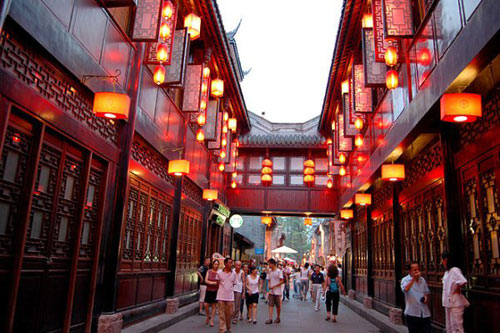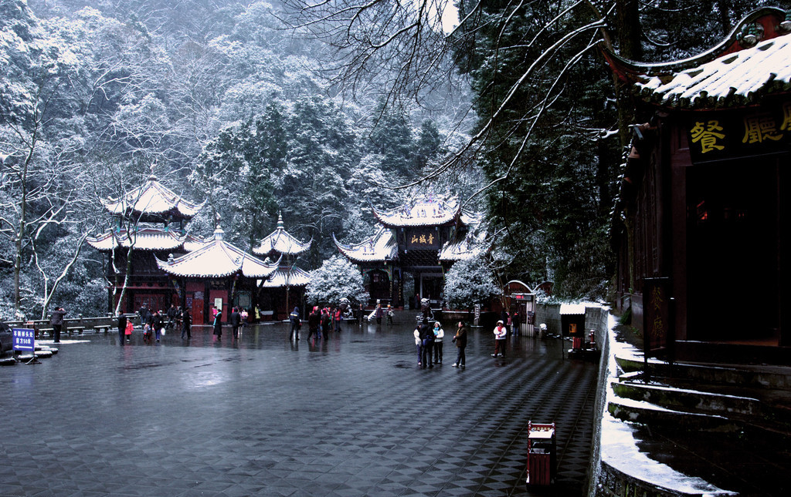
Chengdu is one of the most important economic, transportation, and communication centers in Western China. According to the 2007 Public Appraisal for Best Chinese Cities for Investment, Chengdu was chosen as one of the top ten cities to invest in out of a total of 280 urban centers in China. It was recently named China’s 4th-most livable city by China Daily.
The fertile Chengdu Plain, on which Chengdu is located, is also known as the “Country of Heaven” (天府之国, Tiānfǔzhiguó), a phrase also often translated as “The Land of Abundance”. The discovery of the Jinsha site suggests the area of Chengdu had become the center of the bronze age Sanxingdui culture around the time of the establishment of the state of Shu, prior to its annexation by Qin in 316 BC.